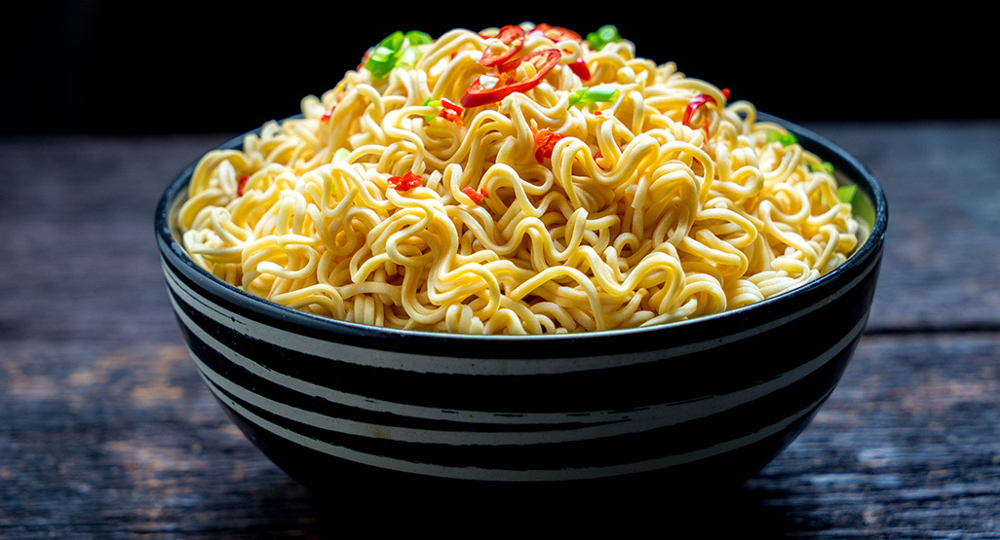

INSTANT NOODLE

Description
Instant noodles is a delicacy Enjoyed by Almost everyone that Codes, Binges Anime or Shows or just needs Something to fill their Tummy with.
Instant Noodles have too many options to choose from.You can have Maggi Noodles or Chicken Noodles the choices are Unending.Just Pick One.
Ingredients
- Instant Noodles (ANY)
- Tastemaker
- One and a Half Cup of Water
- Toppings or Seasoning (IF YOU GET ONE IN THE PACK)
STEPS
- Take the water in a Pot and Put to Boil.
- Once it starts to boil, take the Noodles and Put them in the Boiling Water and Empty the Tastemaker in the Pot.
- Wait for 3-5 minutes Once it's cooked take it out in a Bowl add the Seasoning and garnish it with any Sauce you Prefer for Added taste.ENJOY YOUR INSTANT NOODLES